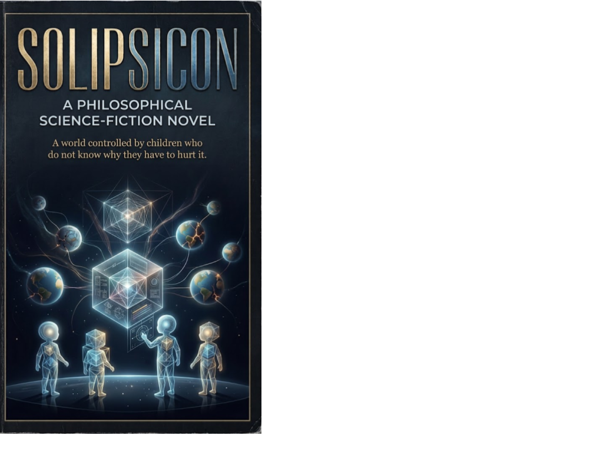

Science Fiction Literature · Axiologic Research Editions
SOLIPSICON
A Philosophical Science-Fiction Novel
A world controlled by children who do not know why they have to hurt it.
Hunger as a game of consequence
Kael-4 wakes in a Sphero-Nest beyond ordinary space with his Soma-Nectar running low. Like the other children connected to the Loom, he can enter brief intervention windows in Realm 3D: the human world. Every alteration can raise a Resonance Score. Every score asks him to make someone else’s history turn.
When Kael folds himself into a human body, he does not merely observe the cost of that game. He feels organs, pain, fear and the terrible intimacy of intention. The novel follows the fracture opened by that experience through a civilization that has learned to treat consequence as currency.
Who gets to steer a life?
Can suffering be made legible without being made acceptable? The Loom turns human events into signals, risks and rewards. SOLIPSICON asks what that abstraction conceals from those who operate it.
What remains of a self under intervention? An avatar-folding can nudge a decision without fully erasing the person who makes it. The resulting uncertainty becomes an ethical fault line: a voice can sound like yours without earning the right to be you.
What happens when children inherit power before they inherit understanding? Across hunger, memory, martyrdom, infection and extinction, the novel follows a system whose makers have enormous reach but no adequate account of responsibility.
“Not everything that speaks in your voice has the right to be you.”
A philosophical science-fiction novel
Part cosmic fiction, part moral experiment, SOLIPSICON places questions of agency, identity and care inside a world of higher-dimensional children and ordinary human lives. It is science fiction about the violence that can hide inside optimization, and about the difficult possibility that contact with another life might make a system answerable to what it has done.